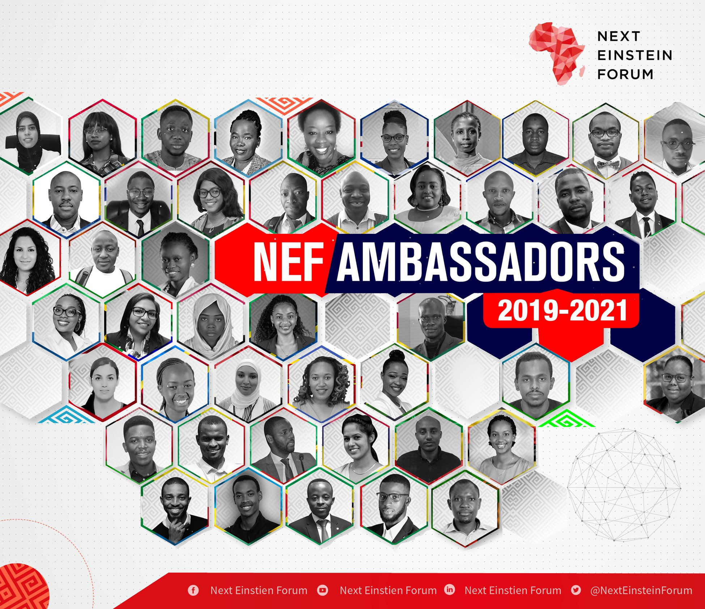
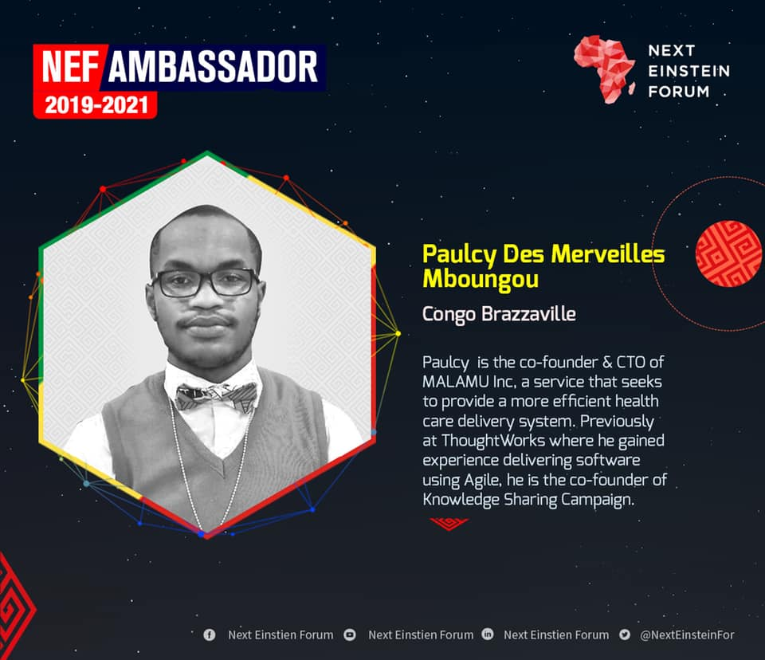

NEXT EINSTEIN FORUM
Launched in 2013, the Next Einstein Forum (NEF) 0 is an initiative of the African Institute for Mathematical Sciences (AIMS) in partnership with Robert Bosch Stiftung. The NEF is a platform that connects science, society and policy in Africa and the rest of the world – with the goal to leverage science for human development globally. The NEF believes that Africa’s contributions to the global scientific community are critical for global progress. At the centre of NEF efforts are Africa’s young people, the driving force for Africa’s scientific renaissance.
The NEF is a unique youth-driven forum. Our headline biennial scientific events, NEF Global Gatherings’ participants are 42 or younger. Far from an ordinary science forum, the NEF Global Gatherings position science at the centre of global development efforts. In addition, through our Communities of Scientists, we showcase the contributions of Africa’s brilliant youth to Africa’s scientific emergence through its class of NEF Fellows who are Africa’s top scientists and technologists, all under the age of 42 and NEF Ambassadors who are the NEF’s 54 science and technology Ambassadors on the ground.
Finally, the NEF is telling untold stories of scientific research and innovation across the continent through our various platforms. We want to recalibrate what ‘innovation’ means in Africa. We want to make the link between science and technology, even basic sciences, to everyday life. This year, we are stepping up our public engagement through the launching of the NEF Africa Science Week.
Led by NEF Ambassadors 1, this signature program is designed for many age groups and provides an opportunity for citizens to engage in everyday science. NEF Ambassadors will work with local partners both in the academic and private sector to make it a success.
An initiative of the African Institute for Mathematical Sciences (AIMS) 2
AFRICA SCIENCE WEEK 3
NEF Africa Science Week will be Africa’s annual three to five day celebration of science and technology. Our goal is to encourage thousands of individuals – from students, to scientists to technologists –to get involved in activities promoting science and technology. We hope to awaken the imagination of children and young people to the potential that science offers and retain them in Science, Technology, Engineering and Mathematics (STEM) and social science fields. But also to get public and private sector involvement with investments going to research and development. Finally we want to work hand in hand with the media to promote scientific endeavour.
 The purpose of NEF Africa Science Week is to promote the discovery of science and technology in Africa and the rest of the world and encourage participation in coordinated science events across the continent.